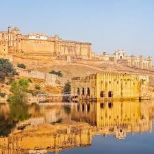
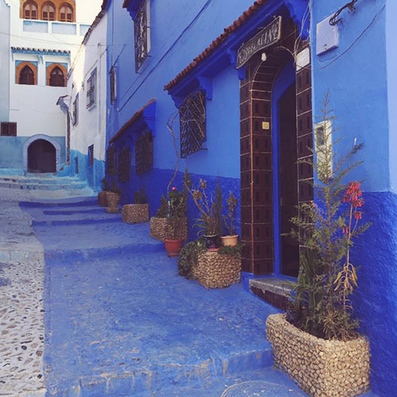

---
Couldn't have gone better, the food was exquisite and devine. Traffic was a bit of an issue, but can be easily avoided.A land of remarkable diversity – from ancient traditions and artistic heritage to magnificent landscapes and culinary creations – India will ignite your curiosity, shake your senses and warm your soul. From the towering icy peaks of the northern mountains to the sun-washed beaches of the southern coast, India's dramatic terrain is breathtaking. Along with abundant natural beauties, exquisite temples rise majestically out of pancake-flat deserts and crumbling fortresses peer over plunging ravines. Aficionados of the great outdoors can scout for big jungle cats on wildlife safaris, paddle in the shimmering waters of beautiful beaches, take blood-pumping treks high in the Himalaya, or simply inhale pine-scented air on a meditative forest walk. Brace yourself – you’re about to take one of the wildest culinary trips of your travelling life. Here you'll fry, simmer, sizzle, knead, roast and flip across a deliciously diverse repertoire of dishes. The hungry traveller can look forward to a tasty smorgasbord of regionally distinct recipes, all with their own traditional preparation techniques and presentation styles – from the competing flavours of masterfully marinated meats and thalis to the simple splendour of vegetarian curries and deep-sea delights.
India tosses up the unexpected. This can be challenging, particularly for the first-time visitor: the poverty is confronting, Indian bureaucracy can be exasperating and the crush of humanity may turn the simplest task into a frazzling epic. Even veteran travellers find their nerves frayed at some point; yet this is all part of the India ride. With an ability to inspire, frustrate, thrill and confound all at once, adopting a 'go with the flow' attitude is wise if you wish to retain your sanity. Love it or loathe it – and most travellers see-saw between the two – to embrace India's unpredictability is to embrace its soul. Spirituality is the common characteristic painted across the vast and varied canvas that is contemporary India. The multitude of sacred sites and rituals are testament to the country's long, colourful, and sometimes tumultuous, religious history. And then there are its festivals! India hosts some of the world's most divine devotional celebrations – from formidable city parades celebrating auspicious events on the religious calendar to simple village harvest fairs that pay homage to a locally worshipped deity.
Srishti Dixit
In festival season, it is 63% more populated than during the rest of the year. Culture is very much alive. Friendly and fun-loving, cultured and historic, Thailand radiates a golden hue, from its glittering temples and tropical beaches through to the ever-comforting Thai smile. Adored around the world, Thai cuisine expresses fundamental aspects of Thai culture: it is generous, warm, refreshing and relaxed. Thai dishes rely on fresh, local ingredients – pungent lemongrass, searing chillies and plump seafood. A varied national menu is built around the four fundamental flavours: spicy, sweet, salty and sour. Roving appetites go on eating tours of Bangkok noodle shacks, seafood pavilions in Phuket, and Burmese market stalls in Mae Sot. Cooking classes reveal the simplicity behind the seemingly complicated dishes, and mastering the market is an important survival skill. In between the cluttered cities and towns is the rural heartland, which is a mix of rice paddies, tropical forests and squat villages tied to the agricultural clock. In the north, the forests and fields bump up against toothy blue mountains decorated with silvery waterfalls. In the south, scraggy limestone cliffs poke out of the cultivated landscape like prehistoric skyscrapers. The usually arid northeast emits an emerald hue during the rainy season when tender green rice shoots carpet the landscape.
The celestial world is a close confidant in this Buddhist nation, and religious devotion is colourful and ubiquitous. Gleaming temples and golden Buddhas frame both the rural and the modern landscape. Ancient banyan trees are ceremoniously wrapped in sacred cloth to honour the resident spirits, fortune-bringing shrines decorate humble homes as well as monumental malls, while garland-festooned dashboards ward off traffic accidents. Visitors can join the conversation through meditation retreats in Chiang Mai, religious festivals in northeastern Thailand, underground cave shrines in Kanchanaburi and Phetchaburi, and hilltop temples in northern Thailand. With a long coastline (actually, two coastlines) and jungle-topped islands anchored in azure waters, Thailand is a tropical getaway for the hedonist and the hermit, the prince and the pauper. This paradise offers a varied menu: playing in the gentle surf of Ko Lipe, diving with whale sharks off Ko Tao, scaling the sea cliffs of Krabi, kiteboarding in Hua Hin, partying on Ko Phi-Phi, recuperating at a health resort on Ko Samui and feasting on the beach wherever sand meets sea.
Jessica Emmery
| GBP | MAD |
| 1 | 12.38 |
The art of the city, creates a large scale museum.Morocco is a gateway to Africa, and a country of dizzying diversity. Here you'll find epic mountain ranges, ancient cities, sweeping deserts – and warm hospitality. From Saharan dunes to the peaks of the High Atlas, Morocco could have been tailor-made for travellers. Lyrical landscapes carpet this slice of North Africa like the richly coloured and patterned rugs you’ll lust after in local cooperatives. The mountains – not just the famous High Atlas but also the Rif and suntanned ranges leading to Saharan oases – offer simple, breathtaking pleasures: night skies glistening in the thin air, and views over a fluffy cloudbank from the Tizi n’Test pass. On lower ground, there are rugged coastlines, waterfalls and caves in forested hills, and the mighty desert. Morocco's cities are some of the most exciting on the continent. Join the centuries-old trail of nomads and traders to their ancient hearts, from the winding medina maze of Fez to the carnivalesque street-theatre of the Djemaa el-Fna in Marrakesh. In the rocky deserts medinas are protected by kasbahs, on the coast by thick sea walls. But it's not just a heritage trip, as Morocco's cities are forward-facing too, with glitzy new urban design in Casablanca, Rabat and Tangier looking to the future as well as paying homage to their roots.
Enjoying Morocco starts with nothing more strenuous than its national pastime – people-watching in a street cafe with a coffee or a mint tea. Use the opportunity to plan your next moves – hiking up North Africa’s highest peak, learning to roll couscous, camel trekking in the desert, shopping in the souqs or getting lost in the medina. Between the activities, you can sleep in boutique riads, relax on panoramic terraces and grand squares, and mop up delicately flavoured tajines – before sweating it all out in a restorative hammam. Morocco is a storied country, that has, over the centuries, woven its ties to Sub-Saharan Africa, Europe and the wider Middle East into whole cloth. Its mixed Arab and Berber population forms a strong national identity, but an increasingly youthful one, taking the best of its traditions and weaving the pattern anew – from the countryside to the city, from the call to prayer from the mosque to the beat of local hip hop. Morocco has a hundred faces and sounds, all ready to welcome the traveller looking for spice and adventure.
Chris Halt